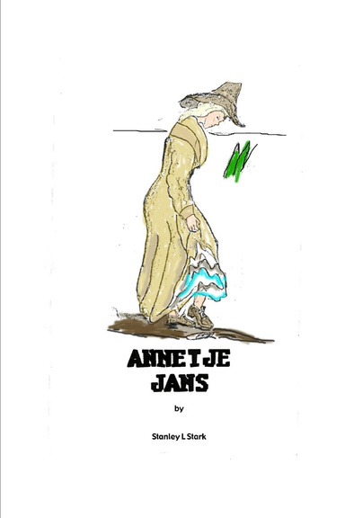

Annetje Jans

Annetje Jans was accused of lifting her skirt while crossing a street, causing a flurry of gossip in Early New York. Settlers struggled to make a new world, but gossip and in-fighting was as much a part of New Amsterdam as was fighting the Indians.
Editor's Choice
Annetje Jans
Annetje Jans was accused of lifting her skirt while crossing a street, causing a flurry of gossip in Early New York. Settlers struggled to make a new world, but gossip and in-fighting was as much a part of New Amsterdam as was fighting the Indians. This is a concise history of Annetje Jans, also known as Anneke Janse, Anna Weber, Anna Webber,Anneke Webber, Anna Jane Webber, Annetje Bogartus, one of the first New York settlers. This 15th Century American Woman Colonist of New Amsterdam is ancestor to many, many thousands of Americans. This book contains information about many other New Amsterdam people as well.
View Details